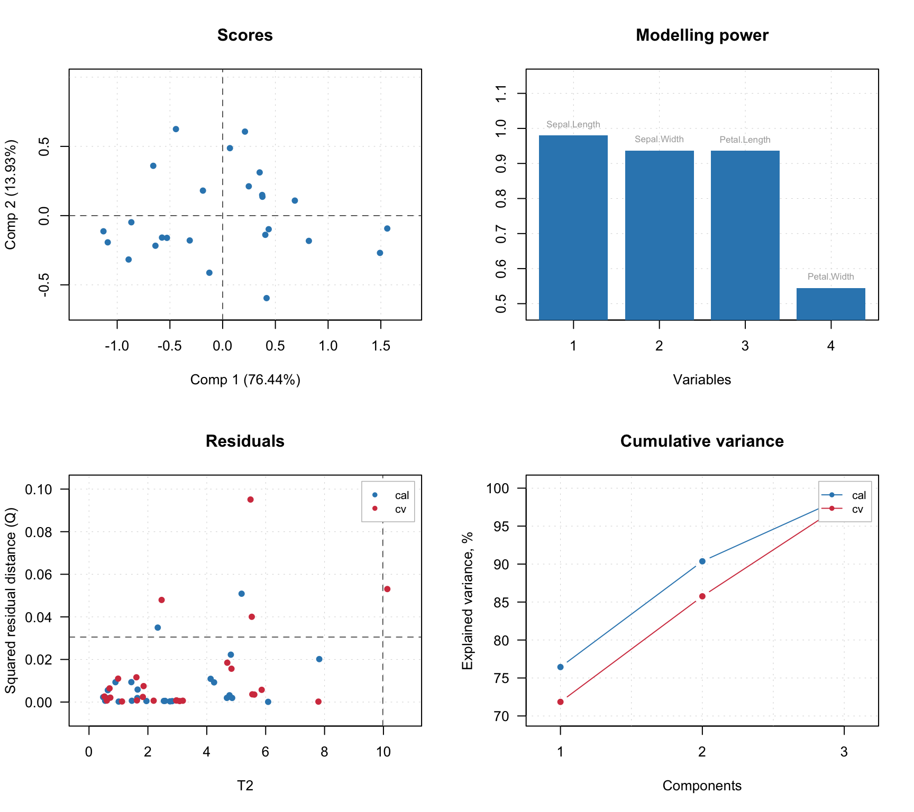
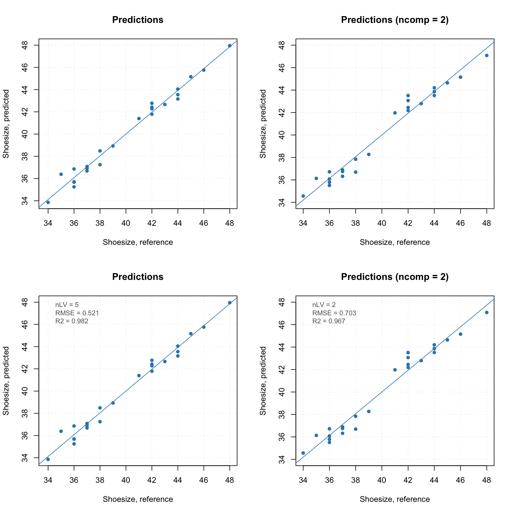
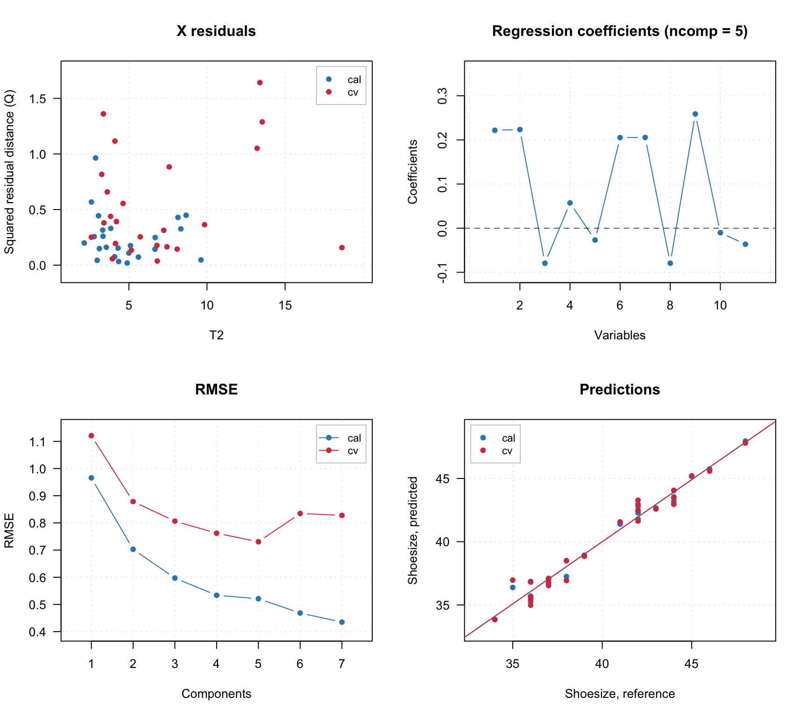

Plotting methods
Plotting methods, again, work similar to PCA, so in this section we will look more detailed on the available methods instead of on how to customize them. PLS has a lot of different results and much more possible plots. Here is a list of methods, which will work both for a model and for a particular results.
Methods for summary statistics.
| Methods | Description |
|---|---|
plotRMSE(obj, ny = 1, ...) |
RMSE values vs. number of components in a model |
plotXVariance(obj) |
explained variance for X decomposition for each component |
plotXCumVariance(obj) |
same as above but cumulative |
plotYVariance(obj) |
explained variance for Y decomposition for each component |
plotYCumVariance(obj) |
same as above but cumulative |
Here and in some other methods parameter ny is used to specify which y-variable you want to
see a plot for (if y is multivariate).
Methods for objects.
| Methods | Description |
|---|---|
plotPredictions(obj, ny = 1, ncomp) |
plot with predicted vs. measured (reference) y-values |
plotXScores(obj, comp) |
scores for decompositon of X (similar to PCA) |
plotYScores(obj, comp) |
scores for decompositon of y (similar to PCA) |
plotXResiduals(obj, ncomp) |
residuals for decompositon of X (similar to PCA) |
plotYResiduals(obj, ncomp) |
residuals for y vs. real (reference) y-values |
plotXScores(obj, ncomp) |
Y-scores vs. X-scores for a particular PLS component. |
Parameter comp allows to provide a number of selected components (one or several) to show the plot
for, while parameter ncomp assume that only one number is expected (number of components in a model or individual component). So if e.g. you created model for five components and selected three, you can also see, for example, prediction plot if you use only one or four components.
Here is an example for m1 model:

By the way, when plotPredictions() is made for results object, you can show performance statistics on the plot (implemented in 0.9.0):
par(mfrow = c(2, 2))
plotPredictions(m1$calres)
plotPredictions(m1$calres, ncomp = 2)
plotPredictions(m1$calres, show.stat = T)
plotPredictions(m1$calres, ncomp = 2, show.stat = T)
The plots for variables are available only for a model object and include:
| Methods | Description |
|---|---|
plotXLoadings(obj, comp) |
loadings plot for decompositon of X |
plotYLoadings(obj, comp) |
loadings plot for decompositon of y |
plotWeights(obj, comp) |
plot with weights (W) for PLS decomposition |
plotRegcoeffs(obj, ny, ncomp) |
plot with regression coefficients |
plotVIPScores(obj, ny) |
VIP scores plot |
plotSelectivityRatio(obj, ny, ncomp) |
Selectivity ratio plot |
And, of course, both model and result objects have method plot() for giving an overview.

Excluding rows and columns
From v. 0.8.0 PCA implementation as well as any other method in mdatools can exclude rows and columns from calculations. The implementation works similar to what was described for PCA. For example it can be useful if you have some candidates for outliers or do variable selection and do not want to remove rows and columns physically from the data matrix. In this case you can just specify two additional parameters, exclcols and exclrows, using either numbers or names of rows/columns to be excluded. You can also specify a vector with logical values (all TRUEs will be excluded).
The excluded rows are not used for creating a model and calculation of model’s and results’ performance (e.g. explained variance). However main results (for PLS — scores, predictions, residuals) are calculated for these rows as well and set hidden, so you will not see them on plots. You can always e.g. show scores for excluded objects by using show.excluded = TRUE. It is implemented via attributes “known” for plotting methods from mdatools so if you use e.g. ggplot2 you will see all points.
The excluded columns are not used for any calculations either, the corresponding results (e.g. loadings, weights or regression coefficients) will have zero values for such columns and be also hidden on plots.